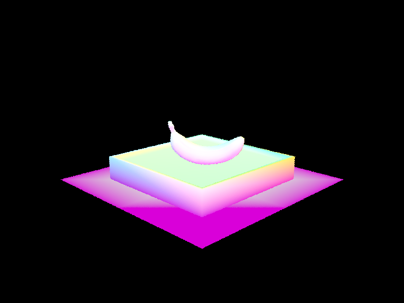

Webpage: https://cal-cs184-student.github.io/hw-webpages-sp24-d-and-j/hw3/index.html
HW3: Pathtracer
By: Joseph Liu and Daniel Hsu
In this project, we implemented the various components of a Monte Carlo path tracing renderer to render realistic 3D scenes. First we implemented ray generation for a camera, which takes in sensor sample coordinate and generates a ray in world space by mapping the sensor sample from image space to camera space and transforming this vector to world space to create the ray. Then we implemented pixel ray tracing, which calculates the color of a pixel at a given x-y-coordinate by averaging the colors obtained from tracing and sampling multiple rays through scene, each with a random offset for anti-aliasing. With ray-generation and ray-sampling in place, we then implemented ray-triangle intersection, which checks of a ray intersects a triangle using barycentric coordinates, similarly to Homework 1.
However, naively checking each triangle in the mesh for a collision per every ray we cast is very expensive, so we implemented the Bounding Box Hierarchy optimization, which speeds up ray intersection tests by only testing for ray-intersection with objects in the bounding box that a ray intersects. This is done by having a tree of bounding boxes as inner nodes that get smaller and smaller until a threshold of objects is reached, in which leaf nodes containing primitives are created. Now, instead of checking for ray intersection with each object, we check ray-intersection with the bounding boxes until we hit a leaf node, where we then test intersection of the ray for each primitive in the leaf. The logic is, if it doesn’t hit the root, it won’t hit the children either, so don’t bother testing object by object.
With an efficient ray-tracing and ray-intersection infrastructure in place, we move on to lighting. First we implement direct lighting, in which we get the zero-bounce and one-bounce radiance. Zero-bounce radiance is just light from the light source with no bounces, so we just return the emission of the intersected object’s BSDF. As for one-bounce radiance, we implemented two approaches: hemisphere sampling and importance sampling. Our hemisphere sampling function estimates direct lighting at a ray-object intersection point by uniformly sampling the hemisphere around the intersection normal. This is done by generating a number of sample rays, checking if they intersect with any objects in the scene, and if so, adding the light emitted by the intersected object to the total light output. Importance sampling on the other hand estimates direct lighting by sampling only from light sources in the scene. For each light, if it’s a delta light, we sample it once, and if not, we sample multiple times. In both cases ,we check if the light is visible from the intersection point, and if so, we add the light’s contribution to the total light output.
Direct lighting shows us what the lights directly illuminate, but in real life, light bounces off objects in the scene to illuminate other parts of the scene as well, so we implement global illumination. We do this by calculating the radiance that comes from paths with at least one bounce. Specifically, for each ray cast into the scene, while the ray depth (number of bounces) is less than the maximum, we sample a new direction from the BSDF at the intersection point and create a new ray from the intersection point in the sampled direction to simulate a bounce. If this new ray intersects with an object in the scene, we recursively calculate the radiance along this ray and multiply it by the BSDF (albedo) value in the sampled direction.
Finally, we implement adaptive sampling, which optimizes the sampling more in areas with high frequency color variation. We implement this by first generating a ray from the camera through a random point and estimating the radiance along this ray. We then add the estimated radiance to the total pixel irradiance and update the sums used to find the mean and variance. Once we sample enough samples, we calculate the tolerance using the mean and variance, and if the tolerance is less than or equal to the maximum allotted, we stop sampling the pixel and update the pixel color in the sample buffer with the average color of the samples taken so far.
The first step of ray generation is translating a position in image space into normalized coordinates that the ray generation function can use. Given non-negative integers x and y, these can represent the bottom left coordinate of a pixel position. Adding a random positive offset (less than 1) to that (x, y) pair means we sample from a random position within that pixel. Divide the new x (x’) by the screen width and the new y (y’) by the screen height to normalize (x, y).
Then, we create a ray that starts at the camera space’s origin and extends through (x’, y’)’s corresponding location in camera space. To do that, we find the xMin, yMin, xMax, and yMax of the camera space. Then, the xy coordinate in camera space is a 2D lerp between the bounds of the camera space using x’ and y’ as the parameters for lerp. The z-position of all rays is -1.
Now with our ray vector in camera space, we simply do a matrix vector multiplication with c2w to transform our vector in camera space into a vector in world space. Finally, normalize the final vector and set the ray’s min_t and max_t.
We can use the Moller Trumbore algorithm to find the intersection, which is the optimized version of determining a sectioned plane-ray intersection. A triangle is just a region on a plane, so we can determine a triangle intersection with a plane intersection and use barycentric coordinates to determine if said intersection is within the triangle. A plane can be represented with a point on the plane and a normal vector that all points on the plane are orthogonal to. This means that a vector dot product of the normal and any other vector created from two points on the plane is 0.
Now let’s combine the ideas of plane-ray intersection and barycentric coordinates. The point of intersection can be represented with O + tD, where O is the origin of the ray, t is the time to intercept, and D is the normalized direction vector of the ray. It can also be represented with aP1 + bP2 + cP3 where P1, P2, and P3 are the 3 vertices of the triangle and a, b, and c are the barycentric parameters. However, when a point is inside the triangle, a = 1 - b - c and all three parameters are greater than or equal to 0. Each representation’s dot product with the normal will yield 0, so we can place them on opposite sides of the equation of factor out the normal: O + tD = (1-b-c)P1 + bP2 + cP3. After some refactoring of the unknown variables t, b, and c we arrive at the vector-matrix equation of the Moller Trumbore algorithm.
Once we have calculated t, b, and c, we know that the intersection is not within the triangle if b < 0, c < 0, OR 1-b-c < 0. And, we know that the ray intersection is invisible to the camera if t < r.min_t OR t > r.max_t. If t is within range, update r.max_t to be the value of t. In one edge case though, our variables might be undefined if the ray is parallel to the triangle, meaning that they never make an intersection. So, we always return false if dot(S1, E1) in the algorithm equals 0. For Triangle::intersect(), we set the fields of isect to the correct values. As for isect->n, we use the barycentric equation to calculate the interpolated normal using the normals at each vertex (n1, n2, n3) and b and c.
For sphere-ray intersection, if there is an intersection, then the point of intersection, here denoted as (x,y,z), will satisfy the equation x2+y2+z2=R2 where R is the radius of the sphere and the sphere is centered at (0,0,0). x2+y2+z2 is also the dot product of (x,y,z) with itself, which is also representable by (P - C) where P is the point of intersection and C is the center of the sphere. Once again, we represent P = O + tD to get (O + tD - C)2 - R2 = 0. This is a quadratic function, so we can use the quadratic formula to solve it. Note that, however, the quadratic formula contains a square root, meaning that it cannot take in a negative number. If the number is negative, it means that there are no intersection points and we return false immediately. Also note that if the ray is tangent to the sphere, there is only 1 intersection and the square root result equals 0.
Storing our results in t1 and t2 (t1 == t2 if there is only 1 intersection), we find the minimum between t1 and t2 that lies within r.min_t and r.max_t. If it is within range, update r.max_t to be its value. For Sphere::intersect(), update i as needed. For i->n, the normal at the intersection is simply the normalized vector from the sphere’s center to the intersection point.
Left Image: CBspheres.png; Right Image: banana.png; both rendered with normal shading.
Our BVH algorithm recursively creates smaller and smaller children bounding boxes until a child contains a maximum of max_leaf_size primitives, in which it becomes a leaf. First, we set the bounding box to be one that encapsulates all the primitives between start and end. To split this bounding box, the heuristic we chose was to use the average of centroids along the longest axis as the split point. To find this, we get the dimensions of the bounding box and set the split axis to be the one corresponding to the largest dimension (x, y, or z). Then we sort all the primitives in the bounding box based on the coordinate value of the axis. For example, if the split axis is the y-axis, then we sort the primitives based on the y-coordinate of their centroids. Next we split the primitives into two sets down the midpoint of the sorted list of primitives, and recursively run construct_bvh on each half. This will create smaller and smaller bounding boxes. Finally, we turn our attention back to the bounding box at hand, where all that’s left to do is to create a new BVHNode and set its left and right children to the return value of the recursive calls, and return this node.
dae/sky/CBlucy.dae
No BVH: 1452.50s
BVH: 1.20s
dae/sky/dragon.dae
No BVH: 1189.96s
BVH: 1.06s
dae/sky/wall-e.dae
No BVH: 2830.06s
BVH: 1.96s
dae/sky/blob.dae
No BVH: 2246.83s
BVH: 1.74s
With the BVH optimization, we found significant speedup in rendering the models. Especially for the very large ones, this difference was significant (with an average 1267x speedup). For each of the images above (CBlucy.dae, dragon.dae, wall-e.dae, and blob.dae), we found that without BVH, they would take well above 1000 seconds to render, whereas with the BVH optimization, they took no more than 2 seconds to render. The exact times are quoted in the images section. This is because with BVH, we are greatly reducing the amount of ray-primitive intersection tests because of the way the BVH tree is built. The logic is, if it doesn’t hit the root, it won’t hit the children either, so don’t bother testing object by object. Essentially, we only check ray-primitive intersections for objects that are in the leaf node of the BVH that got intersected by the ray. Without BVH, the naive approach is to have each ray would be tested against every object in the scene to find out if they intersect, which is a lot less efficient.
This implementation of direct lighting estimates the direct lighting by sampling uniformly in a hemisphere centered at the intersection point hit_p and given the direction from which the ray came w_out. We define L_out to hold the total estimated lighting and sample ns_area_light times for every light source. For each sample, we generate a new ray in the sampled direction and check if it intersects with any object in the scene. If it does, we calculate the contribution of the intersected object’s emission to the total lighting at the intersection point, which is (BSDF at hit_p) * (emission of intersected object) * (cosine of the angle between sampled direction and normal at the intersection point) / (the number of samples).
For this implementation, instead of sampling uniformly in a hemisphere, we sample only from the light sources. Similar to hemisphere sampling, we define an intersection point hit_p and the direction from which the ray came w_out, as well as L_out to hold the estimated lighting. For each light in the scene, we sample a direction toward the light nad calculate the distribution of the light to the total lighting at the intersection point.
If the light is a delta light, which is one that emits light in a single direction, then we sample it just once. We then sample a direction toward the light source and check if it’s visible from the hit point. If it is, then we generate a shadow ray toward the light. If the shadow ray doesn’t interset anything, we add the contribution to the L_out:
(BSDF at hit_p) * (light sample) * w_in.z / pdf
If the light is not a delta light, then we sample it ns_area_light times. We keep a running sum running_sum to hold the sum of the contributions of all the samples. For each sample, if the light is visible from the hit point, we once again generate a shadow ray toward the light. If the shadow ray doesn’t intersect with any object in the scene, we calculate the contribution of the light to the total lighting at the intersection point and add it to running_sum. Finally, we average out the samples by dividing running_sum by the total number of samples.
Left Image: dae/sky/CBbunny.dae rendered with Hemisphere sampling; Right Image: Same dae, rendered with Lighting Importance Sampling. Both with 64 samples per pixel and 32 light rays.
When the number of light rays per pixel increases for Lighting Importance Sampling, the noise levels in soft shadows decrease.
From top to down, left to right, dae/keenan/banana.dae rendered with Light Importance Sampling at 1 sample per pixel but 1, 4, 16, 64 light rays.
With not a lot of light sources, Lighting sampling fairs better than Hemisphere sampling. With Hemisphere sampling, we are sampling randomly within a hemisphere, which has a chance of not hitting a light source with a ray even when (from a qualitative perspective) we can see the light source casting directly onto an object’s surface. When that location on the surface does not detect any light, it contributes a black pixel to the sampling equation. Other times, hemisphere sampling hits the light source quite often, which generates a brighter pixel. When dark and bright pixels are closely next to each other in an image, they show clear signs of noise. Lighting sampling does not have as big an issue regarding noise as hemisphere sampling does. This is because rays always cast to some location on a light source, so with enough sampling, it converges a lot faster than Hemisphere.
We noticed that our renders for importance sampling were turning out dimmer than expected. To debug this, we played around with the EPS_F vs. EPS_D values. We found that using EPS_D instead of EPS_F solve the issue to some extent, but it was still dimmer than the spec and the shadow was a little off. With some research and consultation from Ed, we discovered this might be due to a phenomenon called self-shadowing, in which a surface incorrectly casts a shadow on itself due to numerical precision errors in the calculations. To solve this issue, we added the following two lines of code to our shadow ray code:
shadow_ray.min_t = EPS_F;
shadow_ray.max_t = distToLight - EPS_F;
Setting the shadow ray’s min_t to EPS_F ensures that the shadow ray starts a tiny bit above the surface from which it was being cast. This helps avoid self-intersections where the ray might incorrectly detect an intersection with the surface it started from.
Setting the shadow ray’s max_t to distToLight - EPS_F ensures that the shadow ray doesn’t extend beyond the light source, but rather stops just before reaching the light. THis helps avoid situations where the ray may incorrectly intersect other surfaces beyond the light source, causing those surfaces to cast a shadow and dim the light.
The indirect lighting function at_least_one_bounce_radiance() calculates the radiance that reaches a point in the scene after at least one bounce off a surface. For our implementation, we first sample a new direction from the BSDF at the intersection point. Then, if the maximum ray depth has been reached, then we simply return; if not, then we generate a new ray in the sampled direction and recursively call the function with this new ray. We also use a Russian Roulette termination scheme, where we terminate the recursion with some probability. We chose 0.35 for our termination probability. Finally, we add the radiance returned by the recursive call to the total radiance and weigh it by the value of the BSDF, the cosine of the angle between the new direction and surface normal, as well as the inverse of the PDF.
Some images rendered with global illumination.
Left: dae/sky/CBbunny.dae rendered with only direct lighting. Right: dae/sky/CBbunny.dae rendered with only indirect lighting.
Max Ray Depth | No accumulation | Accumulation | Accumulation + RR |
0 | |||
1 | |||
2 | |||
3 | |||
4 | |||
5 | |||
100 |
Non-Accumulated Versions
As we can see in the No Accumulation column, the 2nd bounce adds light that bounced off the walls/floor and hit the bunny or that bounced off the bunny and hit the walls/floor. In either case, small lighting contributions are added. We can see that the bottom of the bunny is now slightly illuminated, which comes from the light that bounces off the floor/wall and hits the bottom of the bunny; since the 1st bounce is just light->object->camera, we wouldn’t see it if we don’t go past 1 bounce. If we look at the image where we don’t accumulate, we see that this only includes parts of the bunny that didn’t get light from the first bounce. As for third bounce, we see a very dim but slightly recognizable view of the box. So we see that the third bounce is contributes just general environment lighting to the scene.
Accumulated Versions
Moving on to the renders of the bunny where we accumulate the multiple bounces of light, we first see that trivially, with max-depth of 0, we only see the light, since this is zero-bounce. For one bounce, we see only the parts of the scene directly hit by the light, and observe that the shadows are very dark since they are not illuminated at all by the light. Beyond one-bounce, we see the shadows and non-directly illuminated parts of the scene become a slight more lit, which is representative of what we realistically would see. Additionally, we start to see the color of the walls reflected off the bunny, meaning that the light is hitting the wall, becoming tinted with the color of the wall, then hitting the bunny. Beyond 3 bounces, we see less and less of an improvement other than the scene becoming more bright and a slight more detail on the rabbit (bumps and whatnot) becoming more apparent.
Russian Roulette
Between using Russian Roulette termination and not, we observe little to no difference. We chose a termination probability of 0.35, since it was between the recommended 0.3 and 0.4, and observed that it produced results very similar to if we didn’t use Russian Roulette at all. The difference is only really apparent if we zoom in a lot, where we see that the Russian Roulette version looks a slight bit more grainy.
The following images are dae/keenan/banana.dae files rendered with 4 light rays per light, a max depth of 5, and the number of samples per pixel being 1, 2, 4, 8, 16, 64, and 1024 respectively going from left to right, top to bottom. As the number of samples increases, the noise levels of the image decreases.
Adaptive sampling is used in ray tracing to reduce noise in the final image while also optimizing the number of rays traced. This is done by tracing more rays in areas of the image where the color varies greatly and fewer in areas where the color is more uniform.
We first defined the number of samples to evaluate as ns_aa, the origin pixel, and the total color of the pixel, which will be aggregated.
If the number of samples per pixel is 1, we simply generate a single ray through the pixel and estimate the radiance using est_radiance_global_illumination.
Otherwise, we initialize the sums s1 and s2 used to calculate the variance, the sample count (number of samples taken), and a flag indicating whether the sampling is done. Then, we generate a batch of rays per pixel. For each ray, we generate a random sample point within the pixel as well as a ray through the sample point. THen we estimate the radiance along this ray and add it to the total color as well as s1 and s2. After each batch of rays, we calculate the mean and variance of the radiance values as well as the tolerance defined as 1.96 * sqrt(variance / sample_count). If we’re within the maximum allowed tolerance, then we calculate the pixel’s color as the average color of the rays traced so far and return.
Essentially, our implementation traces a batch of rays per pixel, calculates the variance of the colors returned by these rays, and if the variance is within the tolerance, we average the color of the rays traced so far, and no more rays are traced for this pixel. If the variance exceeds the tolerance, more rays are traced until either the variance falls below the tolerance or the maximum number of rays is reached.
Left: Adaptive Sampling rendering on dae/sky/CBbunny.dae using 2048 samples per pixel, 1 sample per light, and a max depth of 5. Right: The sample rate image of the left image.
Left: Adaptive Sampling rendering on dae/sky/CBspheres_lambertian.dae using 2048 samples per pixel, 1 sample per light, and a max depth of 5. Right: The sample rate image of the left image.
Our schedules were both very packed, so we pretty much just worked on the assignment in our own time. We would communicate on what part we were working on, what progress we’ve made, whether we needed assistance with the part we’re working on, etc. Since some parts were independent from each other or could be coded up independently, sometimes we each did a part separately, and if we got stuck, we’d just make a branch and have the other person take a look. Overall, this worked well for us, as it was accommodating to our schedules and allowed us to both get the learning benefits from this assignment, as we’d review each others’ code for each part to ensure both correctness and proper understanding of the concepts.